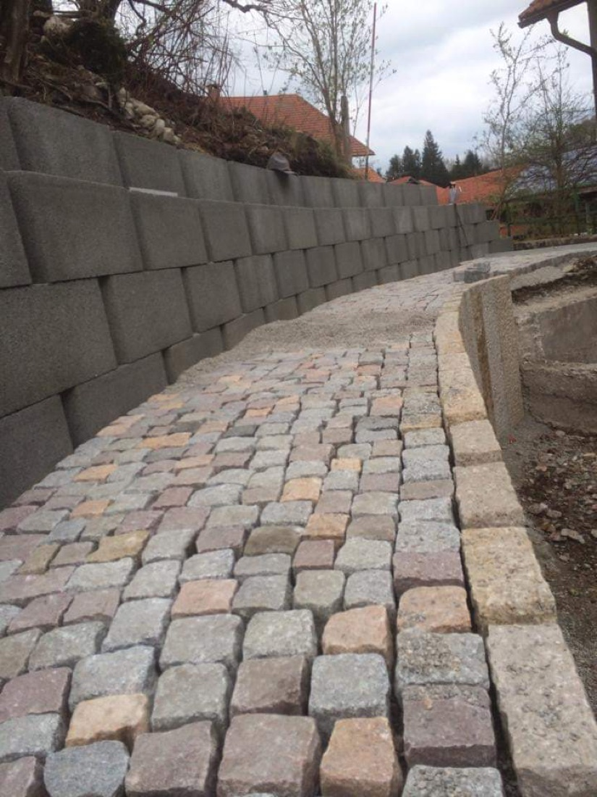
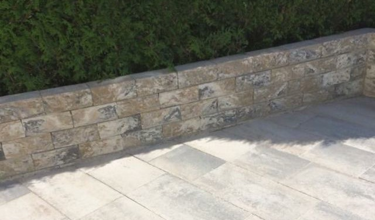
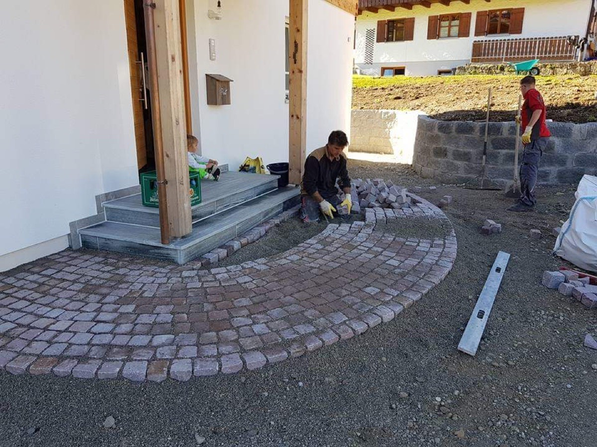

Mauern, die den Hang halten.
Ob Hang, Grundstücksgrenze oder Beet. Wir bauen Mauern aus Naturstein und Blocksteinen, die zum Garten passen und lange stehen.

Aus einem Hang wird ein Garten.
Im Allgäu ist kaum ein Grundstück eben. Eine gute Mauer macht aus einem steilen Stück Garten eine Fläche, die Sie nutzen können.
Sie kann aber auch einfach eine klare Linie ziehen, zur Straße oder zum Nachbarn.
- Hänge abfangen und ebene Flächen gewinnen
- Eine Grenze zum Nachbarn ziehen
- Beete, Wege und Terrassen fassen
- Beratung bei der Steinwahl, mit Mustern vor Ort
Nicht jede Mauer ist gleich gebaut.
Welche Bauweise passt, hängt davon ab, wie viel Erde die Mauer halten muss und wie sie aussehen soll.
Trockenmauer
Die Steine liegen ohne Mörtel aufeinander und halten durch ihr Gewicht. Eine leichte Neigung zum Hang gibt Halt. In den Fugen finden Pflanzen und kleine Tiere Platz.
Mauer aus Blocksteinen
Große, behauene Blöcke aus Granit oder Beton wirken ruhig und kräftig. Sie eignen sich gut, wenn viel Erde gehalten werden muss.
Niedrige Einfassung
Zwei, drei Reihen Stein reichen oft schon. Sie fassen Beete, Terrassen und Wege ein und geben dem Garten klare Linien.

Welcher Stein passt zu Ihrem Haus?
Granit, Kalkstein, Sandstein. Hell oder dunkel, grob oder glatt. Die Auswahl ist groß, und auf Fotos sieht jeder Stein anders aus als in echt.
Herr Sopa zeigt Ihnen vor Ort, was zu Haus, Garten und Gelände passt, und bringt Muster mit. So entscheiden Sie mit dem Stein in der Hand.
Mauern von Sopa.



Fragen zu Mauern.
Was ist eine Trockenmauer?
Eine Mauer ohne Mörtel. Die Steine werden so geschichtet, dass sie sich gegenseitig halten. Trockenmauern sind wasserdurchlässig, wirken natürlich und bieten Pflanzen und Tieren einen Platz in den Fugen.
Was passiert mit dem Wasser hinter der Mauer?
Am Hang drückt Regenwasser gegen die Mauer. Eine Hinterfüllung mit Kies und eine Drainage leiten es ab. Das gehört bei einer Stützmauer von Anfang an dazu.
Wie hoch darf eine Mauer an der Grenze sein?
Das regeln das Nachbarrecht, die Bauordnung und manchmal der Bebauungsplan. Klären Sie das am besten vorher mit der Gemeinde und Ihrem Nachbarn. Beim Termin vor Ort sprechen wir das gern mit an.
Bekomme ich vorher einen Preis?
Ja. Nach dem kostenlosen Termin vor Ort bekommen Sie einen schriftlichen Kostenvoranschlag. Gebaut wird erst, wenn Sie zugestimmt haben.
Das machen wir auch.
Vom Aushub bis zum letzten Stein. Sie haben einen Ansprechpartner für alles.


Erzählen Sie uns von Ihrem Projekt.
Am schnellsten geht es am Telefon. Oder Sie planen Ihr Projekt in einer Minute, und Herr Sopa meldet sich bei Ihnen.